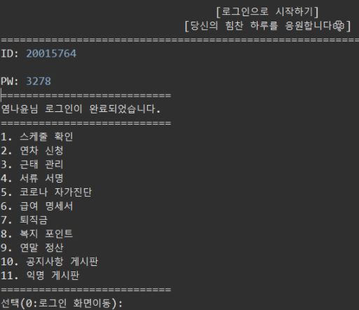
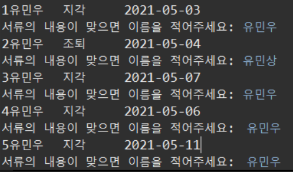
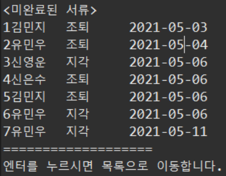
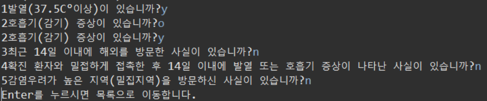

로그인 화면 구성
직원 및 관리자의 로그인창이며 직원으로 로그인했을때 보이는 화면입니다.
사용기술: BufferedReader, ArrayList, BufferedWriter
▶직원 더미에 있는 직원번호(아이디)와 전화번호 뒷번호(비밀번호)정보가 일치해야지만 로그인이 됩니다.
근태 확인(직원)

직원이 로그인을 하고 근태 관리 메뉴에 들어가게 되면 나오는 화면입니다. 해당화면에서 3.근태 확인으로 이동시 해당 월의 근태를 확인 할 수 있습니다.
사용기술: BufferedReader, ArrayList
▶출퇴근 시간을 체크하면 시간이 기록되는 출퇴근더미의 출퇴근 시간을 통해 지각/조퇴/근무일수의 숫자를 카운트해주는 기능입니다.
서류 서명(직원)
직원들이 자신의 지각 혹은 조퇴 기록을 확인하고 서명을 할 수 있는 화면입니다.
사용기술: BufferedReader, ArrayList, BufferedWriter
▶근태관리에서 지각이나 조퇴인 데이터가 생기면 직원서류서명더미에 데이터를 저장하고 이를 통해 로그인된 해당 직원의 지각,조퇴 데이터만 출력하여 직원이 서명을 하고 서명을 안하거나 서명이 잘못된 데이터는 직원서류서명더미에 남겨 관리자가 관리하게 할 수 있는 기능입니다.
결제 서류-근태 확인(관리자)
관리자가 미완료된 근태 서류 목록들이 출력되는 화면입니다.
사용기술: BufferedReader, ArrayList
▶직원서류더미에 남겨진 서명이 잘못되거나 서명이 안된 데이터들을 관리자가 확인 할 수 있는 기능입니다.
코로나 자가진단(직원)
코로나 자가진단의 질문의 목록들이 출력된 화면입니다.
사용기술: BufferedReader, ArrayList
▶코로나 자가진단 문항 데이터가 저장된 파일더미를 통해 질문을 가져와 직원이 y(Y) 또는 n(N)으로 입력하게 합니다. 이와같이 답하지 않는다면 질문이 넘어가지지 않고 해당 질문을 다시합니다. 코로나 자가진단이 끝난후 모든 데이터들은 관리자가 볼 수 있게 COVID완료 더미에 저장돼 관리자가 직원들의 상태를 확인을 할 수 있는 기능입니다.
A name you trust
Start Bootstrap has been the leader in free Bootstrap templates since 2013!